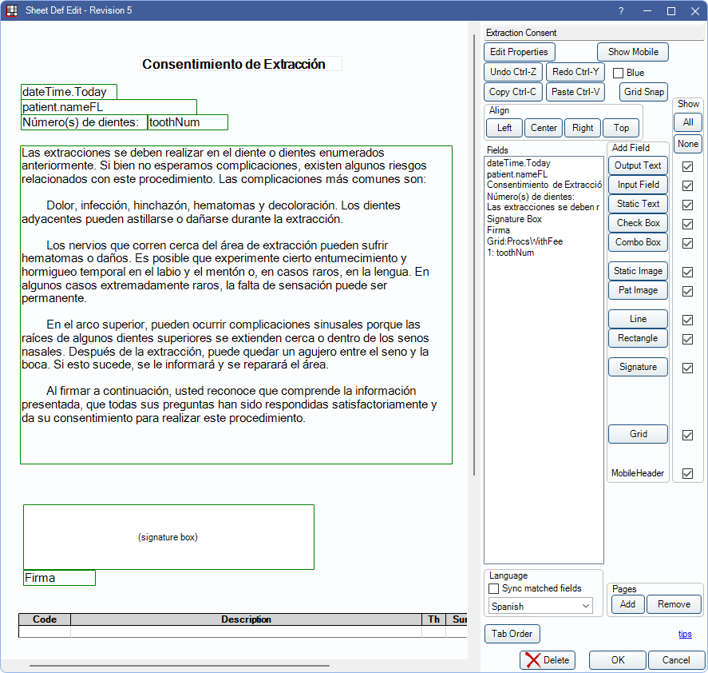

Language Translations for Sheets
Sheets can have multiple copies for different languages used in the office.
In the Edit Sheet Def window, click the Language dropdown.
 See our video: Language Translations for Sheets.
See our video: Language Translations for Sheets.
Setting up language translations allows for easier communication with patients as they are seen in the office. Once set up, translations are automatically used for patients who have a preferred language.
Set Up
Ensure the following is set up before creating a language translation.
- In Preferences, and or edit Languages used by patients.
- Set patients' preferred Language in Edit Patient Information.
Creating a Language Translation for a Sheet
- Open a sheet to translate.
- Click the Language Dropdown to select the language to edit, or click Add New.

When adding a new sheet, click OK to continue - A copy of the default sheet is created. Make edits, add in translations, and any other needed information.
- Translations are not done by the system. A user must go into each field and manually enter the translation into the selected language version.
- A user may need to move the field or edit the size.
- Edited fields on a translated sheet show in green. Fields that have not been changed show in blue.
- Click OK to save.
Patients automatically use the sheet that matches their preferred language when filling Patient Forms on the kiosk or when filling forms using eClipboard.
To delete a language translation, select the translation from the dropdown menu, then click Delete. This only deletes the selected language translation, not the entire sheet.
Sync matched fields: Determine if new fields added to the default language sheet are added to secondary language sheets automatically and movement syncs automatically. Checked by default.
- Checked: New fields added to the Default sheet are added to all other languages. If the field is moved on the default sheet, it is moved to the same position on the other sheets. Once a field is edited from a translated sheet (i.e., not the default), movements made on the default no longer sync to that translation. Fields that do not sync are outlined in green on the translated sheet. Fields that sync are outlined in blue on the translated sheet.
- Unchecked: New fields added to the Default sheet need to be added to other languages manually. Any movements also need to be made manually on other sheets.
Web Forms
When filling Web Forms, patients can use the dropdown in the upper left to select their preferred language.

Pros & Cons
Some offices may find creating language translations to be more useful, while other offices might find it affects their workflow.
Pros:
- All languages are found on one form, in one place. This reduces clutter in sheets and forms by only displaying one sheet, rather than multiple sheets for each language. This is especially useful for offices that cater to a number of languages.
- Forms used in the Kiosk or eClipboard automatically use the preferred language for the selected patient. The office does not need additional notes or popups reminding them of the patient's preferred language.
Cons:
- If using Web Forms, the office cannot have a link to each language (e.g., a new patient packet available in Spanish and English). Instead, the patient must select their preferred language from the dropdown. While this is easy to do, it may be missed by some patients.
- If the office already had separate sheets created for each language, they must re-create them as language translations. Note: It may be possible for Open Dental HQ to merge these sheets for an additional fee. See Custom Sheets for a quote.